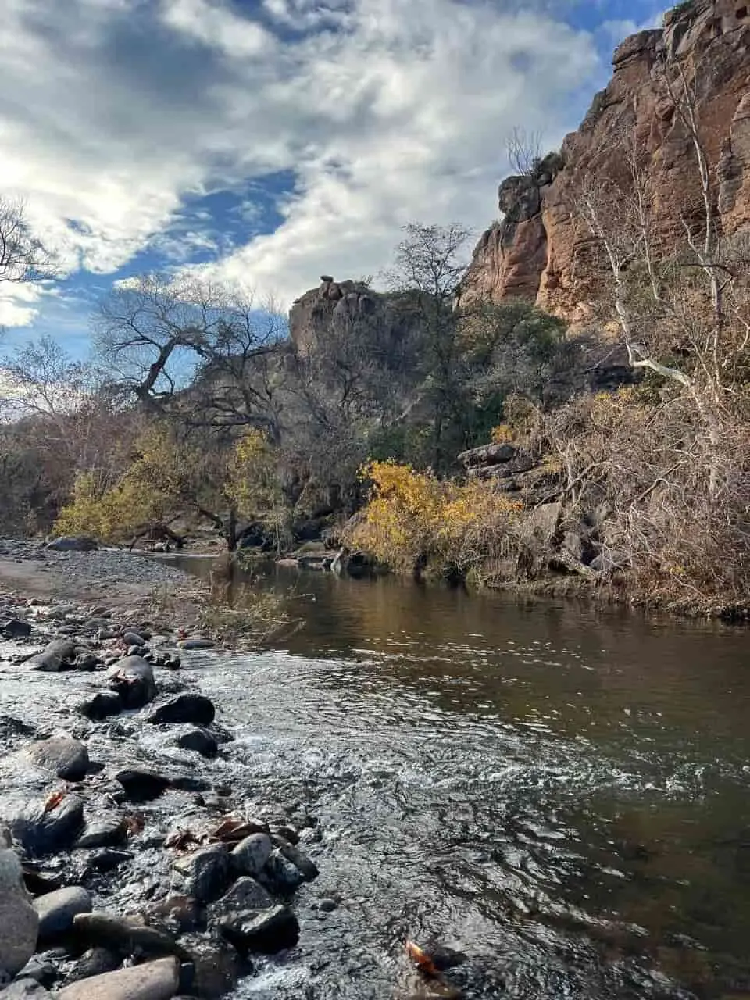

Paquime Camping
We are here to guide you in your adventures, find local spots to go camping, and help you navigate the area. We can advice you on certain spots if you need keys, if it's free, and how easy it is to reach those areas.
The region of Paquime is located in the northwestern area of the state of Chihuahua, Mexico. The most populated cities, known as Nuevo Casas Grandes and Casas Grandes are close to it, although compared to other cities they would be considered towns. Closer to Casas Grandes you can find the ruins of Paquime. It was once a city of native indians who lived in the region. This region has two main rivers, Rio Palanganas and Rio Piedras verdes, both join and turn into the Rio Casas Grandes. Even though they're located in a dessert area this rivers have water all year long, they both originate in the mountains, and you can find awesome camping spots all around.